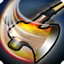
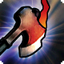
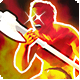
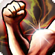
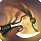
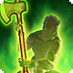
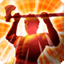

The Tank role!
WAR is only one of the four tanks in FFXIV. The tank role has universal rules to follow, and it's best to understand these fundamental rules before you start playing.
1.) Tank Role Abilities
First, let's discuss the role abilities. Role abilities are universal, meaning every tank has them. Often, novice players fail to pay more attention to these abilities, which can harm their performance as a tank.
Remember, providing a more effortless experience for your DPS and healers is your job. Grouping mobs and maintaining aggro is critical, but knowing the nuances makes you a cut above the rest.
Below is a table for all role abilites!
| Ability | Effect |
|---|---|
|  | Delivers an attack with a potency of 220 |
|  | Delivers an attack with a potency of 190
Combo Action: Heavy Swing Combo Potency: 340 Combo Bonus: Increases Beast Gauge by 10 |
|  |
Grants 3 stacks of Berserk, each stack guaranteeing weaponskill attacks are critical and direct hits. Increases damage dealt when under an effect that raises critical hit rate or direct hit rate. Duration: 15s Additional Effect: Extends Surging Tempest duration by 10s to a maximum of 60s |
| Significantly increases enmity generation. Effect ends upon reuse. |
|
|  |
Delivers an attack with a potency of 110 to all nearby enemies. Additional Effect:Increased enmity |
|  |
Delivers a ranged attack with a potency of 150. Additional Effect: Increased enmity |
|
Delivers an attack with a potency of 200. Combo Action: Maim Combo Potency: 480 Combo Bonus: Restores own HP Cure Potency: 250 Combo Bonus: Increases Beast Gauge by 20 |
|
|  | Increases maximum HP by 20% and restores the amount increased. Additional Effect: Increases HP recovery via healing actions on self by 20% Duration: 10s |
|  |
Delivers an attack with a potency of 330. Beast Gauge Cost: 50 |
| Reduces damage taken by 30% and delivers an attack with a potency of 55 every time you suffer physical damage. Duration: 15s |
2.) Rules/Nuances
1. Gap closing
In a dungeon, you may be tempted to gap close to the nearest enemy for better control over grouping enemies. Yes, DPS can often damage the enemies before you can establish enmity, or you may want to clear faster. Whatever your reason, it is a good idea to gauge your healer's capabilities beforehand or ask them if it's ok. You and your healer are a team; you're not a solo entity; without your healer, you will die(unless you're a WAR, but we will get into that in a moment).
Warrior is the exception at 82-100. The reason for this is because of bloodwhetting. Warriors can sustain themselves independently for the entire dungeon. You may be asking, is this fair? The answer is no, it's not, but it's in the game now, so utilize it as much as you can.
2. AOE or Single Attack
When pulling mobs in a dungeon, it is a good rule of thumb to use only AOE attacks until two enemies are left. During a boss battle, however, you should only use single-target attacks.